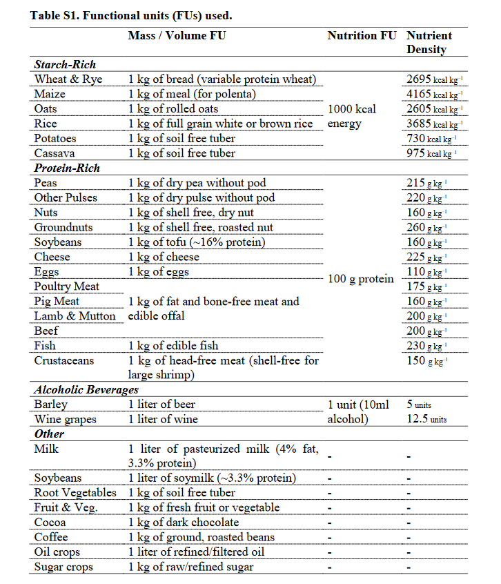
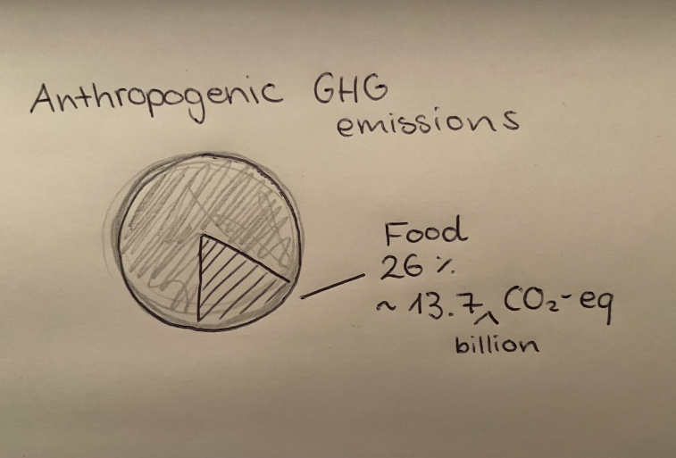
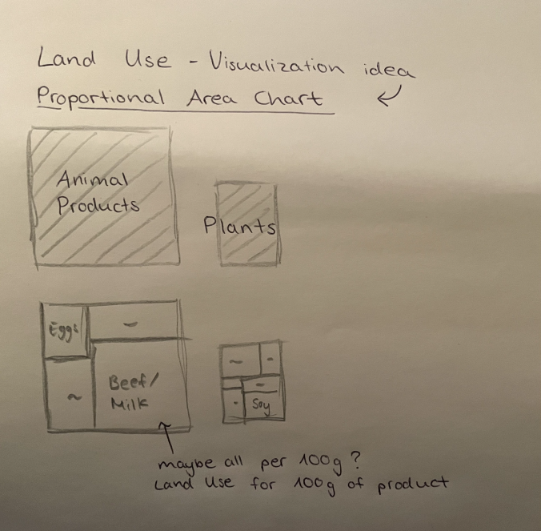
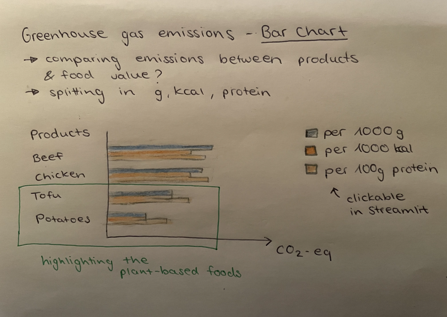
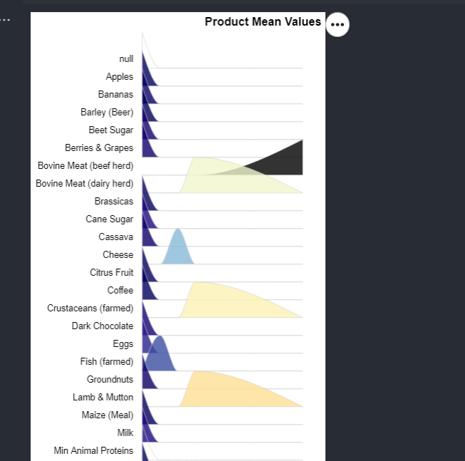
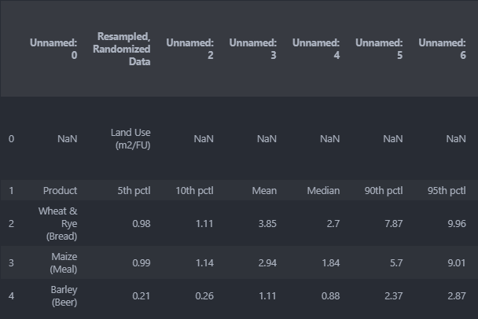
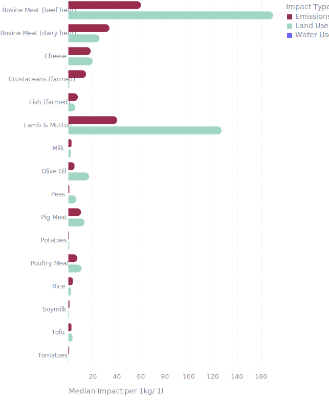
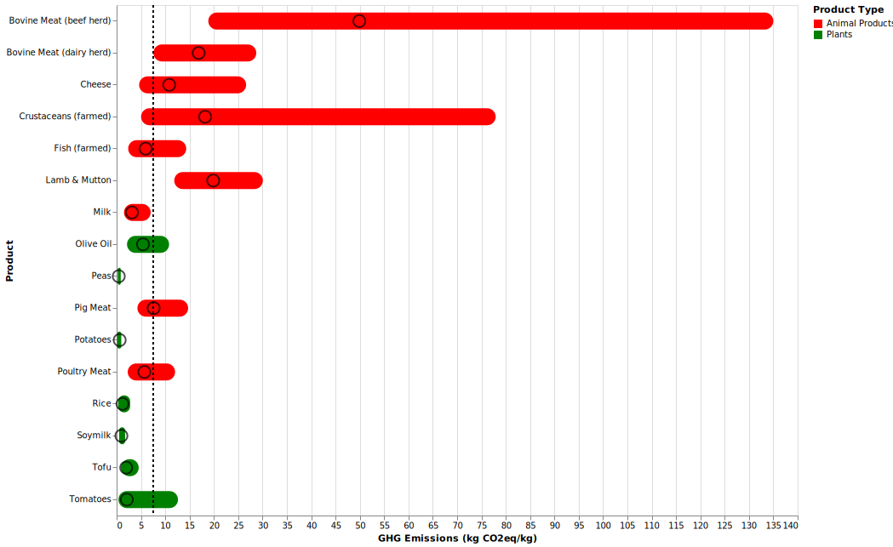
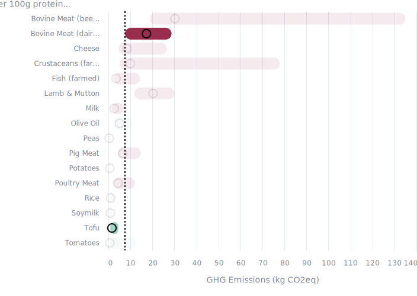

2 Environmental Impact
2.1 About the Data (Poore and Nemecek 2018)
This dataset covers data from approx. 38,700 commercially viable farms in 119 countries and 40 products, representing ~90% of global protein and calorie consumption.
The meta-analysis contains six important environmental impact indicators:
- land use
- freshwater withdrawals weighted by local water scarcity
- water use
- GHG (greenhouse gas)
- acidifying
- eutrophying emissions (runoff of excess nutrients into the surrounding environment and waterways, which affect and pollute the ecosystems - measured in grams of phosphate equivalents, PO₄eq)
Stress-weighted water use is the volume of blue water multiplied by a water-stress index. Its main application related to water use is the potential to contribute to water scarcity and thereby limit the availability of freshwater for human uses and for the environment.
→ Interesting for the Data-Story: Land Use, Freshwater Use & GHG emissions

In this study from 2018, Poore & Nemecek compared the mentioned environmental impact of different products based on either the mass of the product (Volume FU) or protein contained (Nutrition NU).
→ Comparing the products per 100g of protein could be an interesting metric, because most people consume meat or other animal products because of their nutritional value.
2.2 Explorative Data Analysis
Because this is a very complex (but well-known) data set I looked for already existing visualizations of the data to get an understanding of possible trends. I found very good visualization ideas on the “Our World in Data” Website.
See the example visualizations here: Our World in Data
2.3 First Visualization ideas
2.3.1 Pie Chart

Using this simple pie chart as a starting point, to give an overview over the overall impact of food on the climate.
Quote from the paper: “Today’s food supply chain creates ~13.7 billion metric tons of carbon dioxide equivalents (CO2eq), 26% of anthropogenic (man-made) GHG emissions.” (Poore and Nemecek 2018)
2.3.2 Proportional Area Chart

My initial idea was to visualize the land use with an proporional area chart.
2.3.3 Bar Chart

To visualize the emissions per 1000 kcal, 1kg and 100g protein per product and highlighting the plant-based products.
2.3.4 Ridgeline Chart

To visualize the distribution of ghg emissions (5th percentile, median,…) per product, I thought a ridgeline plot could be fitting. But because the values where so different (really big values compared to small values) the implementation was very difficult, so I later decided on an easier visualization which conveys the same message (range bar chart).
2.4 Pie Chart for Introduction of the Problem
Implementataion:
- Creating a new df with own values out of the study
df_food = pd.DataFrame({"Category": ['non-food', 'food'], "Percent": [74, 26], "Emissions": ['5,269.2 billion tons CO2eq', '13.7 billion tons CO2eq']})Colors for food and non-```python
Plotting the pie chart and saving the df
Final Chart:
.svg)
2.5 Bar Chart comparing the Impact Types
Implementation:
Importing the sheet “Weight”, cleaning the df, dropping some first and last rows with not relevant information
Defining an array with the names of the products I want to compare (otherwise there are too much, visualization will be cluttered)
products_to_select = ['Rice', 'Potatoes', 'Wheat', 'Soymilk','Tofu', 'Bovine Meat (beef herd)', 'Bovine Meat (dairy herd)', 'Pig Meat', 'Poultry Meat', 'Milk', 'Cheese']
df_weight = df_weight[df_weight['Product'].isin(products_to_select)]- The data table was not well structured for my analysis, there where no clear coloumn names

With the help of GitHub Copilot I edited the columns to have a Impact Type Prefix, e.g. Land Use_5th pctl
- Now I could select the median of the Impact Types I wanted to display
df_weight = df_weight[['Product', 'Land Use_Median', 'GHG_Median']]
df_weight = df_weight.rename(columns={'Land Use_Median': 'Land Use', 'GHG_Median': 'Emissions'})- Creating a new column for the impact type and Product Type
df_weight2 = df_weight.melt(id_vars=['Product'],
value_vars =['Land Use', 'Emissions'],
var_name='Impact Type', #neuer Typ
value_name='Impact'
)
animal_products = ['Bovine Meat (beef herd)', 'Bovine Meat (dairy herd)', 'Pig Meat', 'Poultry Meat', 'Cheese', 'Milk']
# Help from CoPiliot
# Create a new column 'Product Type' that indicates whether each product is an animal product or a plant product
df_weight2['Product Type'] = df_weight2['Product'].apply(lambda x: 'Animal Products' if x in animal_products else 'Plants')- Cleaned data set:
| Product | Impact Type | Impact | Product Type |
|---|---|---|---|
| Rice | Land Use | 2.15 | Plants |
| Potatoes | Land Use | 0.82 | Plants |
| Peas | Land Use | 6.73 | Plants |
| Soymilk | Land Use | 0.64 | Plants |
| Tofu | Land Use | 3.41 | Plants |
| Olive Oil | Land Use | 17.29 | Plants |
| Tomatoes | Land Use | 0.17 | Plants |
| Bovine Meat (beef herd) | Land Use | 170.37 | Animal Products |
| Bovine Meat (dairy herd) | Land Use | 25.94 | Animal Products |
| Lamb & Mutton | Land Use | 127.41 | Animal Products |
| Pig Meat | Land Use | 13.44 | Animal Products |
- Saving the data and plotting the bar chart
impact_chart = alt.Chart(df_weight2).mark_bar().encode(
x=alt.X('Impact:Q', scale=alt.Scale(domain=[df_weight2['Impact'].min(), df_weight2['Impact'].max()])).sort('-y').axis( # - ist descending
labelAngle = 0,
titleAnchor = 'start'),
y=alt.Y('Impact Type:N', title=None).axis(
labels = False,
titleAnchor = 'end',
grid = False),
color='Impact Type:N',
).facet(
row=alt.Row('Product:N', sort=product_order, title=None, header=alt.Header(labelAngle=0, labelAlign= 'left')),
spacing = 5, # Set facet label angle to 45 degrees
)Final Chart:

2.6 Range Bar Chart for comparing GHG emissions and Protein
Implementation:
Importing the sheets “Nutritional Units” cleaning the df, dropping some first and last rows with not relevant information
Defining an array with the names of the products I want to compare
Repeating step 3 from the weight sheet - restructuring the coloumn names
Dropping all columns after number 7, because I only want to compare the GHG emissions
df_nu = df_nu.drop(df_nu.columns[7:], axis=1)- Having now this table with the percentiles of the ghg emissions:
| Product | 5th pctl | 10th pctl | Mean | Median | 90th pctl | 95th pctl |
|---|---|---|---|---|---|---|
| Wheat & Rye (Bread) | 0.265388 | 0.295291 | 0.586843 | 0.474708 | 0.863445 | 1.147522 |
| Maize (Meal) | 0.145937 | 0.161415 | 0.375898 | 0.260918 | 0.510779 | 0.778331 |
| Barley (Beer) | 0.118 | 0.14 | 0.236 | 0.236 | 0.328 | 0.354 |
| Oatmeal | 0.304994 | 0.324056 | 0.945482 | 0.987419 | 1.555471 | 1.639344 |
Choosing which products to compare and dropping the rest
Creating new columns to visualize the animal VS plant products and to compare tofu and bovine meat
#Help from CoPiliot
# Create a new column 'Product Type' that indicates whether each product is an animal product or a plant product
df_nu['Product Type'] = df_nu['Product'].apply(lambda x: 'Animal Products' if x in animal_products else 'Plants')
# Create a new column 'Compare' to later define a scale and change the opacity of all the products that are "No" in the compare list
compare = ['Bovine Meat (dairy herd)' , 'Tofu']
df_nu['Compare'] = df_nu['Product'].apply(lambda x: 'Yes' if x in compare else 'No')
# scale for Product Type Colors
df_nu['Product Type'] = df_nu['Product Type'].astype('category')
PRODUCT_TYPE_NU = df_nu['Product Type'].cat.categories.to_list()
product_colors = alt.Scale(
domain=PRODUCT_TYPE_NU,
range=['red', 'green']
)
# scale for Comparison Opacity
COMPARE = df_nu['Compare'].cat.categories.to_list()
product_opacity = alt.Scale(
domain=COMPARE,
range=[0.1, 1]
)- Plotting the range bar chart and showing median points
bar_nu = alt.Chart(df_nu).mark_bar(cornerRadius=10, height=20).encode(
x=alt.X('5th pctl:Q').scale(domain=[0, 140]).title('GHG Emissions (kg CO2eq/kg)'),
x2='95th pctl:Q',
y=alt.Y('Product:N', title='Product'),
color=alt.Color('Product Type:N', scale=product_colors)
).properties(
width=800,
height=600
)
# better use median!!! -> corrected in the quarto presentation
mean_points = alt.Chart(df_nu).mark_point(filled=False, color='black', size=200).encode(
x=alt.X('Mean:Q'),
y=alt.Y('Product:N'),
)Final Chart:

Also: To focus the attention while comparing meat-protein and tofu-protein, I created a simple vertical line chart at the 5th percentile of bovine meat and gave the products which were not in comparison a lower opacity (see in 7, variable product_opacity).
